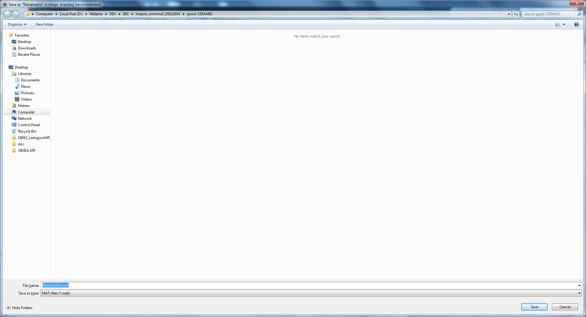

Before we start you should check your image format and the naming of your files. The preferred image format is *.tif and can be compressed with the packbits compression. JPEG or other image formats as well as MPEG video compression formats will not provide you with sub pixel resolution since the images are meant for saving as much space as possible. The script that we use to create a list of images to process is limited to certain naming conventions, but it is possible to generate your own list of images. If you want to change the format or the names of your images you can use free programs like Irfanview (www.irfanview.com) to batch process a huge number of images.
Use the button 'Generate file list' in the main gui or type 'GenerateFileList;' at the MATLAB command line and press 'ENTER'. The following window should appear:
If you select 'Automatically', the following dialog will ask you for the first image to process:
Select the first image (e.g. 45001.bmp) and click on 'Open'. You will be asked to save the image sequence (file list) as a file named 'filenamelist.mat', please do not change this name since the following procedure depends on it. You should save this file in the folder where your images are stored.
After that you will be asked if you want to extract the time for the images:
This option has to be chosen if you want to match stress and strain at the end of your analysis. You can choose between 'Yes (from file properties)' and 'Yes (from file "time.txt")'. In the first case MATLAB extracts the acquisition time steps from your images. The time resolution is limited to 1 second as the information is gathered from the EXIF data. In the second case the time steps are taken from a file "time.txt" that was created during image acquisition. In both cases, the extracted time steps are saved in 'timeimage.txt'.
If you choose 'Manually' for manual generation of the file list in the initial dialog, you will find a different window:
Enter the number of the first and last image to create the file list. The numbers will be the varying part at the end of each file name.
The next windows will ask for the image name (prefix: fix part of the file name), the image extension and the number of digits for the varying image number (including leading zeroes):
The next step is to save the file list into the folder of the images to process (keep recommended name):
